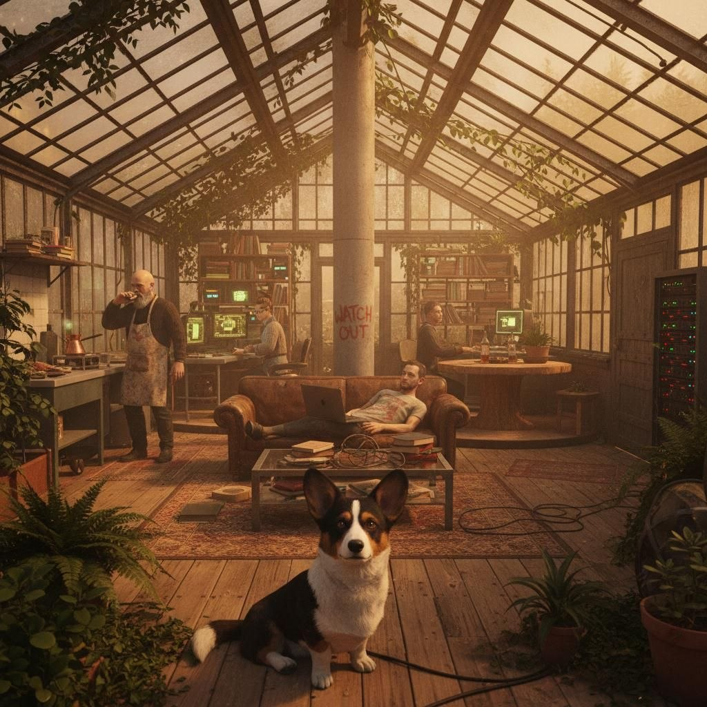
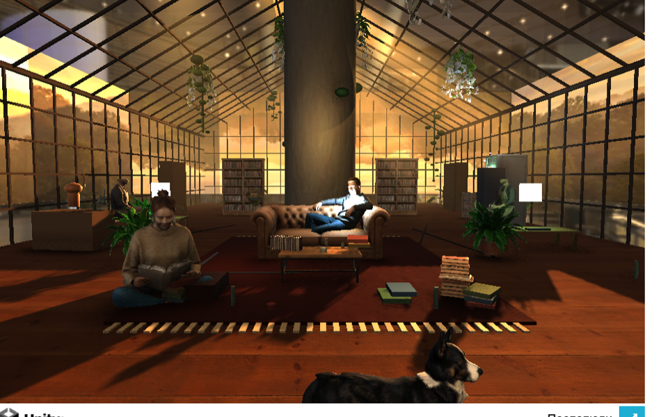
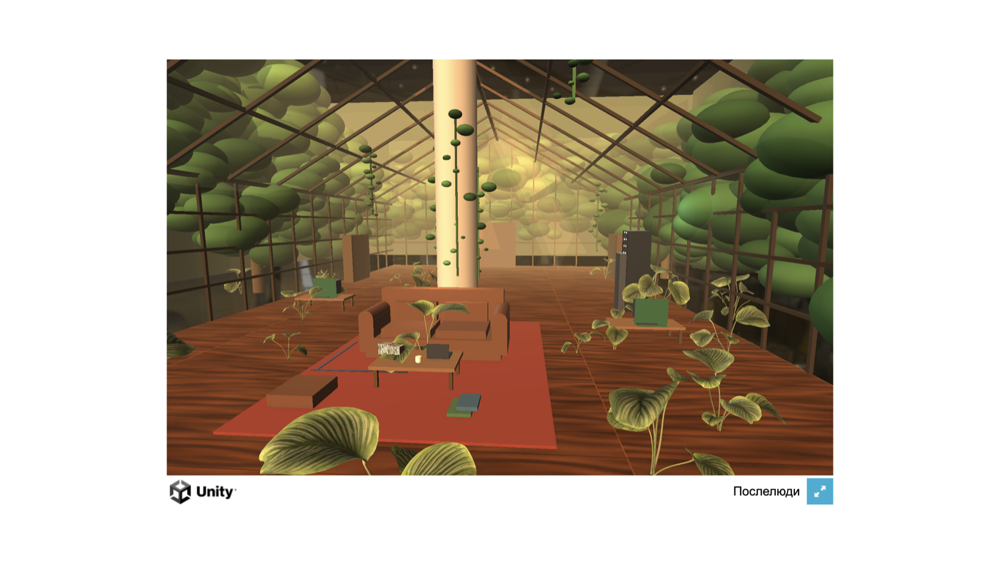
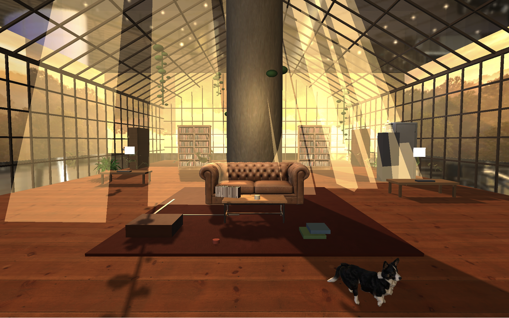
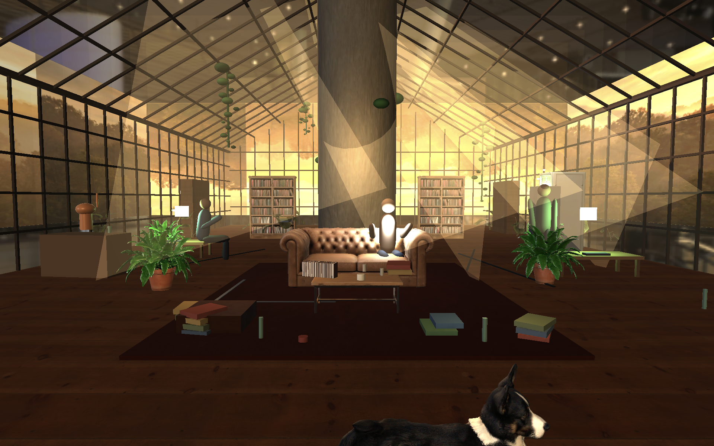
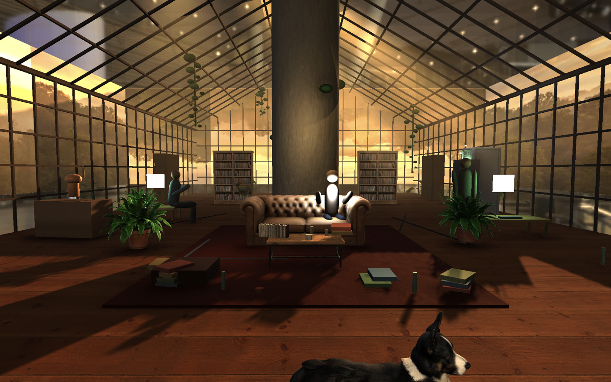
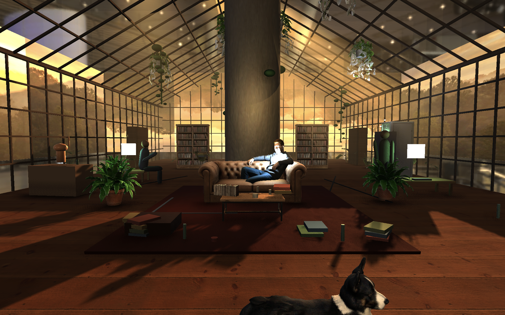

Afterhumans · «Ботаника» Подгонка игровой сцены (Unity 6 / URP, WebGL-рендер на GPU) под референс-концепт. Все кадры ниже — настоящий рендер игрового билда, снятый в браузере с видеокартой.
▶ Открыть в браузере Живая интерактивная сцена «Ботаника» Зайди и сам походи корги по оранжерее. Это сам движок, а не картинка. Если не открывается — серверу нужно работать на этом Маке (порт 8911).Результат vs Референс главное
Слева — твой эталон-концепт. Справа — текущая сцена в движке (Cycle W). Архитектура, золотой час, наполнение и люди подогнаны под референс. Корги теперь живой — циклит состояния (сидит / нюхает / озирается / idle), дышит и виляет хвостом.
РЕФЕРЕНС / ЭТАЛОН

ДВИЖОК · GPU-РЕНДЕР (Cycle W)

Эволюция за сессию грейбокс → обжитая оранжерея
Путь от плоского серого блока до тёплой обжитой сцены. Каждый шаг — отдельный билд, проверенный глазами + приёмкой 5 агентов-судей.





Сгенерённые ассеты-примеры Gemini → Hunyuan3D
Пайплайн: текстовый промпт → чистая product-картинка (Gemini 3 Pro Image) → image-to-3D (Hunyuan3D) → текстуры через Blender → расстановка в Unity. Ниже — исходные картинки, по которым сгенерены 3D-модели и текстуры в сцене.


Честно про оценку
Что подтянулось (приёмка 5 судей, порог 10/10):
- Свет / атмосфера — направленный закатный ключ, длинные тени, god-rays, тёплый грейд
- Наполнение — реальные люди, мебель, лозы, ковёр, граффити, плотный clutter
- Заземление — SSAO-контактные тени (чинил баг: радиус AO стоял 4 см)
- Узнаваемость кадра — колонна-ось, ферменный свод, корги — как в рефе
Остаток до фотореал-10/10 — это ассеты/движок, не код:
- настоящая объёмная волюметрика/god-rays → нужен HDRP или кастомный render-pass (URP-туман равномерный)
- авторский glass-шейдер (рефракция / Fresnel / отражения)
- авторские wear/grime текстуры (потёртости, грязь, патина)
Живой интерактивный билд:
Вектор на выбор: HDRP (настоящая волюметрика) · ещё ассеты/пропсы тем же пайплайном · принять текущее.
http://localhost:8911 (если сервер поднят). Прогресс-лог: LIT_VIEW.html в этой же папке.Вектор на выбор: HDRP (настоящая волюметрика) · ещё ассеты/пропсы тем же пайплайном · принять текущее.